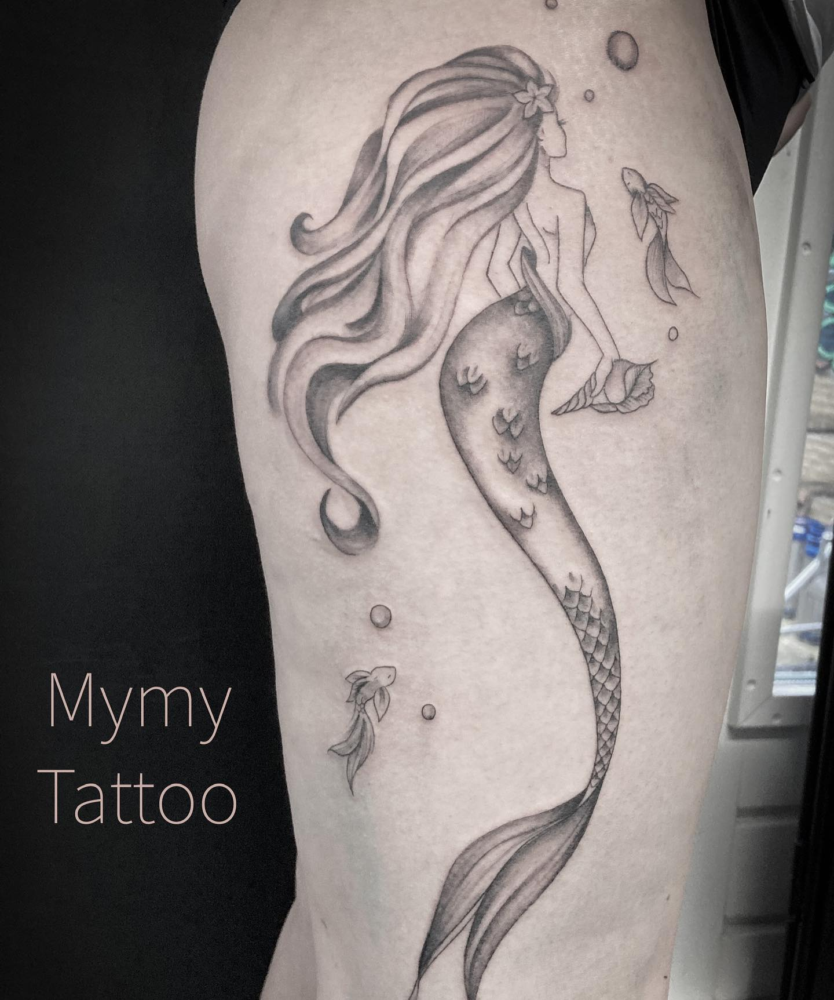
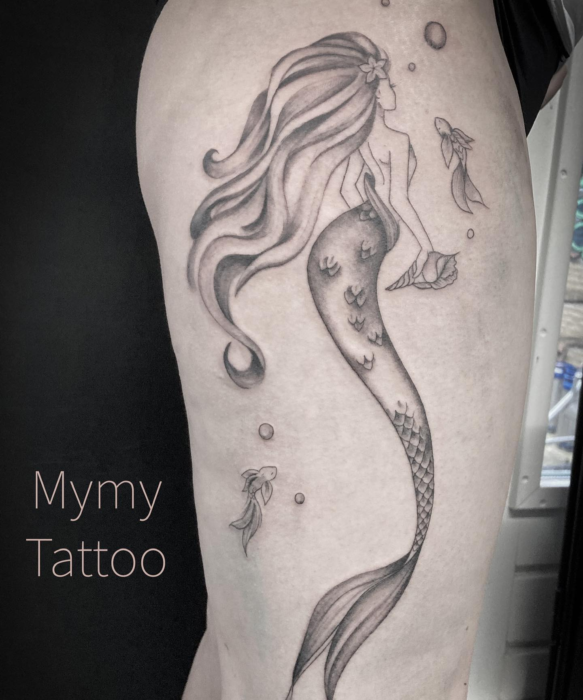

The Tatoo Artist
Myriam Pognyo, est une tatoueuse française expatriée aux Pays-Bas depuis plus d’un an.Elle tatoue depuis maintenant 6 ans, vous pouvez retrouver son travail ses différents réseaux sociaux.
Apres etudes a Esmod Paris, le monde du taouage et de l'illustration m'ont toujours fasciner.Cette perdiode a ete une pause pause dans ma vie mais j'ai hate de vous retrouvez pour vous faire devenir une oeuvre d'art vivante.Passionné de dessin, de design, de mode et d’art graphique, cela faisait longtemps que je partageais mes dessins.Sur la demande d’une copine, j’ai réalisé pour elle un croquis qu’elle voulait se faire tatouer, j’ai eut d’autres demandes et de fil en aiguille, j’ai fini par tatouer moi-même !
Instagram est mon principal réseau social et il est celui qui m’apporte le plus de clientèle. C’est un média facile à utiliser qui permet aux gens de trouver le tatoueur (ou la tatoueuse!) avec un style similaire à ce qu’ils recherchent.


 
